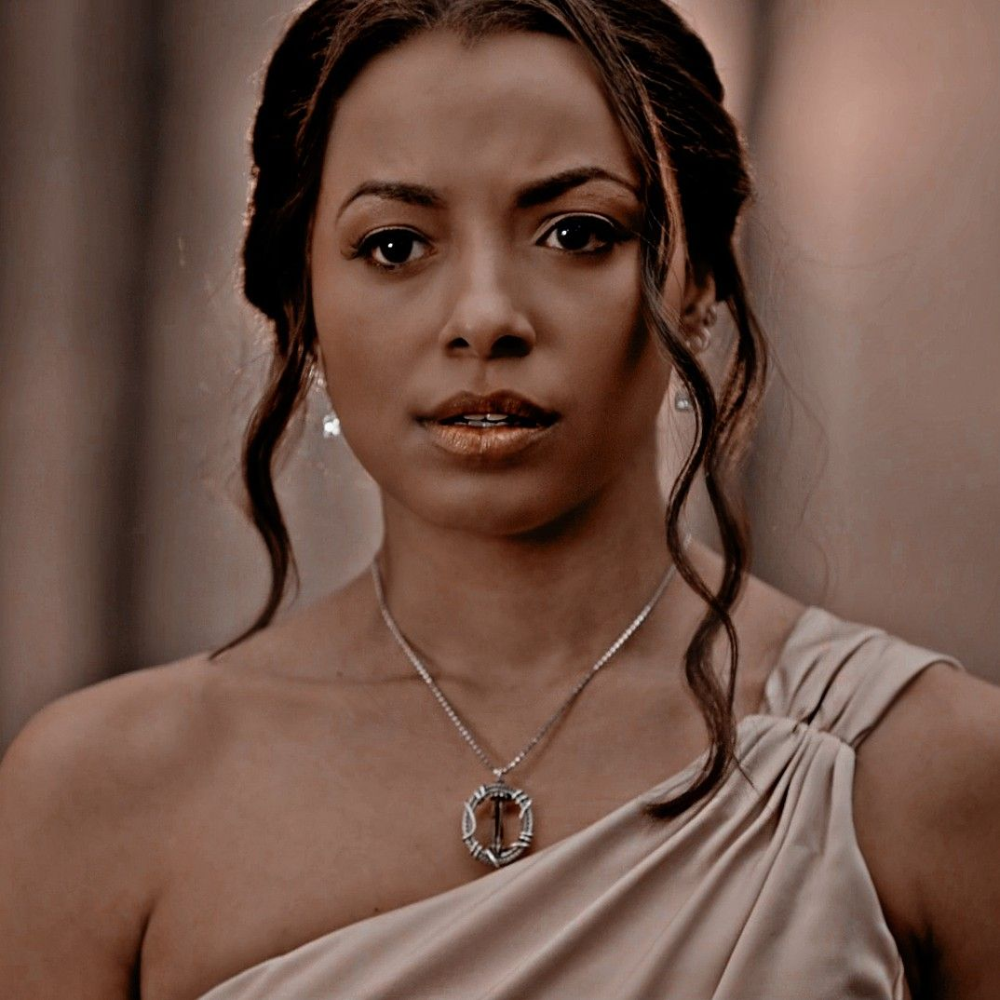

The Vampire Diaries

"The Vampire Diaries," created by Kevin Williamson and Julie Plec, is a supernatural drama series that aired from 2009 to 2017. Based on the book series by L.J. Smith, the show captures the essence of teenage angst, romance, and the struggle between good and evil, set against the backdrop of the fictional town of Mystic Falls, Virginia.
At its core, the narrative revolves around the love triangle between Elena Gilbert, a high school student, and two vampire brothers, Stefan and Damon Salvatore. This central relationship explores themes of love, sacrifice, and redemption. Elena's journey from a grieving teenager to a powerful figure in her own right reflects a broader coming-of-age narrative, highlighting the complexities of identity and choice.
The series is notable for its rich character development. Each character, whether human or supernatural, grapples with personal demons and moral dilemmas, making them relatable to audiences. Damon Salvatore, portrayed by Ian Somerhalder, epitomizes this complexity. Initially introduced as the quintessential villain, he evolves into a more nuanced character, showcasing the capacity for change and the struggle between darkness and light.
The show's success can also be attributed to its engaging plot twists, which keep viewers on the edge of their seats. With a mix of romance, horror, and suspense, "The Vampire Diaries" seamlessly intertwines various storylines, including themes of friendship, betrayal, and the consequences of immortality. The supernatural elements, from witches to werewolves, enrich the narrative, creating a vivid and immersive universe.
Furthermore, "The Vampire Diaries" has had a significant cultural impact, spawning spin-offs like "The Originals" and "Legacies." These extensions further explore the lore and characters introduced in the original series, demonstrating its lasting influence on the genre.
In conclusion, "The Vampire Diaries" is more than just a vampire story; it is a tale of love, loss, and the eternal struggle between good and evil. Its well-rounded characters, intricate plotlines, and emotional depth resonate with viewers, solidifying its place in the pantheon of beloved supernatural dramas.
Characters:
Elena Gilbert
Elena Gilbert, portrayed by Nina Dobrev in "The Vampire Diaries," is a complex character who serves as the emotional anchor of the series. Introduced as a high school student coping with the recent loss of her parents, Elena's journey is marked by profound transformation, reflecting themes of love, resilience, and identity.
At the start, Elena embodies the archetype of the "girl next door." Her kindness, compassion, and desire to help others make her relatable and endearing. However, her life takes a dramatic turn when she becomes entangled in the supernatural world of vampires, particularly through her relationships with Stefan and Damon Salvatore. This love triangle is central to the series, highlighting Elena's struggle to navigate her feelings while grappling with the consequences of her choices.
Stefan Salvatore
Stefan Salvatore, portrayed by Paul Wesley in "The Vampire Diaries," is a central character whose journey explores themes of love, redemption, and the struggle between good and evil. As one of the two vampire brothers vying for the love of Elena Gilbert, Stefan embodies the complexities of immortality and the moral dilemmas that come with it.
Stefan’s character is introduced as the "good brother," characterized by his deep sense of morality and his commitment to protecting humanity. Unlike his older brother Damon, who often embraces his darker instincts, Stefan struggles with the duality of his nature. This internal conflict is a recurring theme throughout the series, as he grapples with the consequences of his past actions, particularly his time as the Ripper—a vampire who succumbs to his bloodlust and loses control.
At the heart of Stefan's story is his love for Elena. Their relationship begins as a classic romantic narrative, rooted in deep emotional connection and mutual support. However, as the series progresses, it becomes clear that their love is not without its challenges. Stefan’s protective instincts often lead to moments of tension, as he struggles to balance his desire to keep Elena safe with her need for autonomy. This dynamic serves to illustrate the complexities of love, especially in the context of a supernatural world filled with danger
Damon Salvatore
Damon Salvatore, portrayed by Ian Somerhalder in "The Vampire Diaries," is one of the most complex and compelling characters in the series. As the darker counterpart to his brother Stefan, Damon embodies themes of redemption, love, and the eternal struggle between light and darkness. His character arc invites viewers to explore the nuances of morality and the potential for change, making him a pivotal figure in the narrative.
From his introduction, Damon is presented as the quintessential antihero. He is charming, seductive, and often ruthless, embodying the archetype of the vampire who revels in his power. His early actions, driven by a desire for revenge against the town of Mystic Falls and particularly against his brother Stefan, establish him as a formidable antagonist. However, beneath this veneer of arrogance and cruelty lies a deeply wounded soul grappling with loneliness and a longing for connection.
One of the central themes of Damon’s character is the struggle for redemption. His love for Elena Gilbert serves as a catalyst for his transformation, pushing him to confront his darker impulses and seek a more noble path. This evolution is gradual and fraught with challenges, as Damon often oscillates between his instinctual desires and the genuine love he feels for Elena. His journey highlights the complexities of love, revealing how it can inspire profound change and personal growth, even in those deemed irredeemable.
Bonnie Bennett

Bonnie Bennett, portrayed by Kat Graham in "The Vampire Diaries," is a standout character whose strength, loyalty, and bravery make her an essential part of the series. As a witch and one of Elena Gilbert's closest friends, Bonnie embodies themes of friendship, sacrifice, and empowerment throughout the narrative.
From the beginning, Bonnie is characterized by her deep connection to her heritage and her magical abilities. Initially hesitant about her powers, she grows into a confident and formidable witch, often using her abilities to protect her friends and confront the supernatural threats that plague Mystic Falls. Bonnie’s journey reflects her struggle to balance her responsibilities as a witch with her desire for a normal life, highlighting the challenges faced by those who are different.
One of Bonnie's defining traits is her unwavering loyalty. She consistently stands by her friends, often putting their needs above her own. This selflessness is particularly evident in her willingness to sacrifice her well-being for the greater good. Throughout the series, Bonnie faces numerous hardships, including betrayals and losses, yet she emerges stronger, showcasing her resilience and determination.
Caroline Forbes

Caroline Forbes, portrayed by Candice Accola in "The Vampire Diaries," is a character who undergoes remarkable growth and transformation throughout the series. Initially introduced as a quintessential mean girl, Caroline evolves into one of the most dynamic and relatable characters, embodying themes of resilience, friendship, and self-discovery.
At the beginning of the series, Caroline is depicted as a high-achieving, somewhat superficial high school student focused on popularity and perfection. Her character often serves as a foil to Elena Gilbert, highlighting the pressures of teenage life and societal expectations. However, beneath her polished exterior lies a deep vulnerability stemming from insecurity and a longing for acceptance. This complexity makes her relatable and sets the stage for her eventual evolution.
Caroline's transformation begins in earnest when she becomes a vampire. Initially, she struggles with her new identity, grappling with the challenges of her vampirism while trying to maintain her humanity. This internal conflict allows viewers to witness her journey of self-acceptance as she learns to embrace her powers and redefine herself beyond the high school stereotype. Her struggles reflect broader themes of acceptance and the idea that true strength lies in embracing one’s flaws.